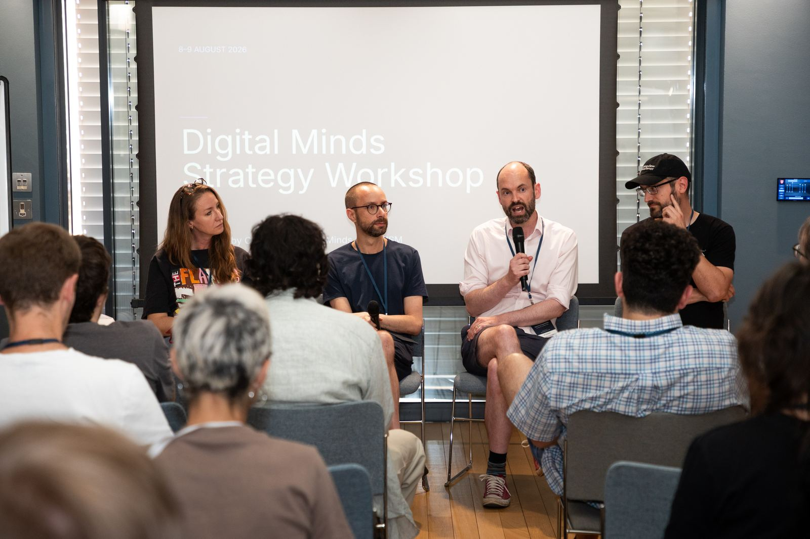

Strategy workshop
8–9 August 2026 · Jesus College, Cambridge
A two-day, output-oriented workshop bringing together fellows, mentors, and invited experts for structured, collaborative research on neglected strategic questions about how society should prepare for the emergence of digital minds.
We have a very limited number of spaces available for this workshop and intend to bring together a small cross-disciplinary group drawn from digital minds, AI policy and governance, and macrostrategy.
Session topics
- Mapping the societal intervention landscape
- Systematic comparison of policy and institutional approaches
- Scenario planning for plausible future trajectories
- Macrostrategy development
- Research priorities for strategy and governance
Workshop output
Unlike typical academic conferences, these sessions are designed to contribute towards a comprehensive report that lays the groundwork for what policy and governance frameworks should look like in this emerging field.
Fellowship connection
All fellows from the Digital Minds Fellowship are invited to attend the workshop, allowing them to contribute to research outputs and build connections with senior experts in the field.